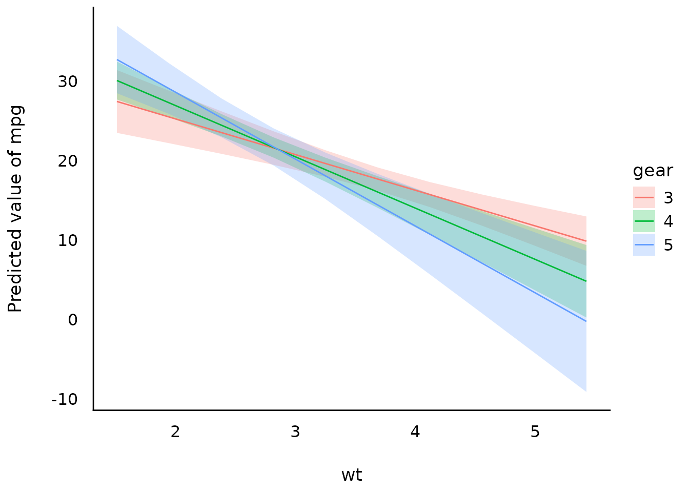

This vignette can be referred to by citing the package:
citation("see")
#>
#> Lüdecke et al., (2021). see: An R Package for Visualizing Statistical
#> Models. Journal of Open Source Software, 6(64), 3393.
#> https://doi.org/10.21105/joss.03393
#>
#> A BibTeX entry for LaTeX users is
#>
#> @Article{,
#> title = {{see}: An {R} Package for Visualizing Statistical Models},
#> author = {Daniel Lüdecke and Indrajeet Patil and Mattan S. Ben-Shachar and Brenton M. Wiernik and Philip Waggoner and Dominique Makowski},
#> journal = {Journal of Open Source Software},
#> year = {2021},
#> volume = {6},
#> number = {64},
#> pages = {3393},
#> doi = {10.21105/joss.03393},
#> }Introduction
modelbased is a package in easystats ecosystem to help with model-based estimations, to easily compute of marginal means, contrast analysis and model predictions.
For more, see: https://easystats.github.io/modelbased/
Pairwise Contrasts
contrasts <- estimate_contrasts(model)
means <- estimate_means(model)
plot(contrasts, means)